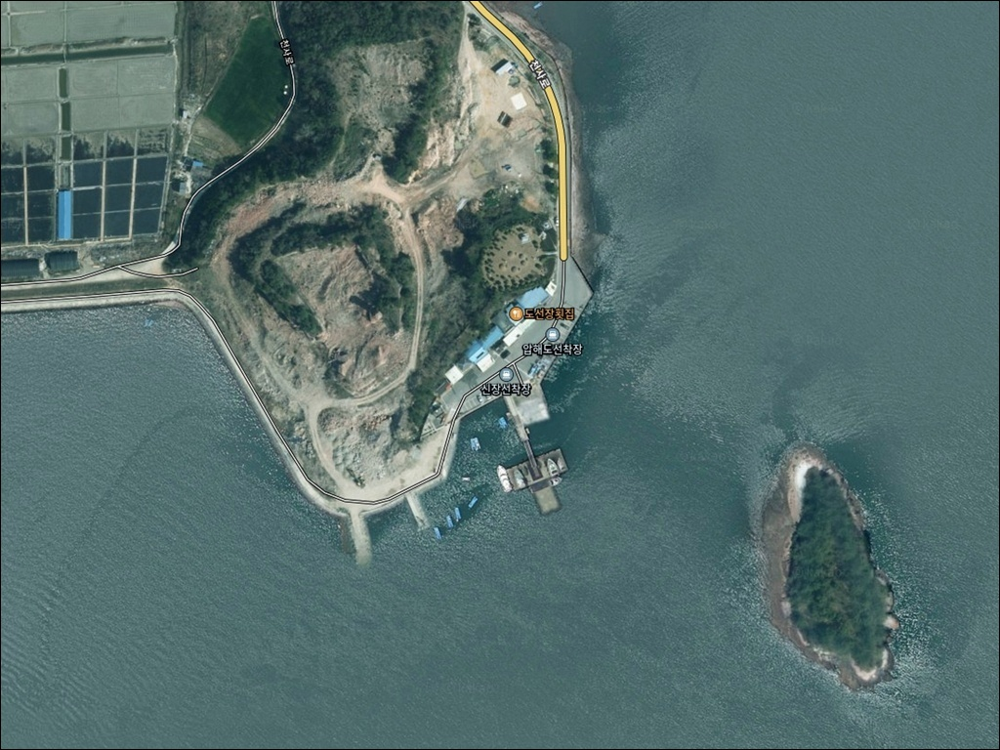
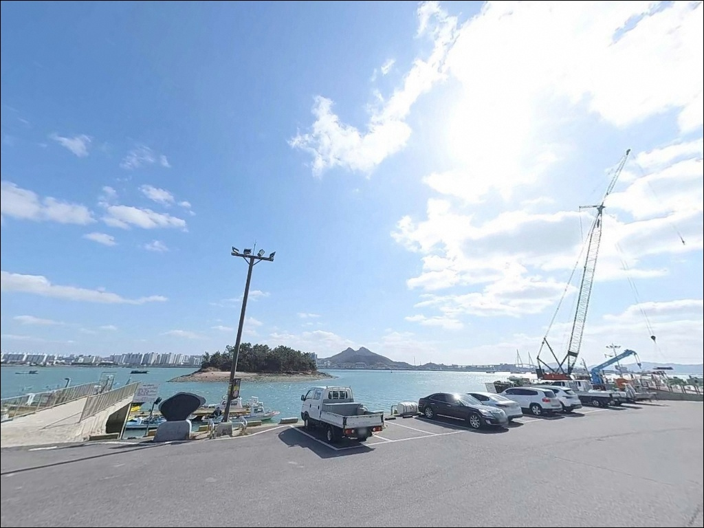
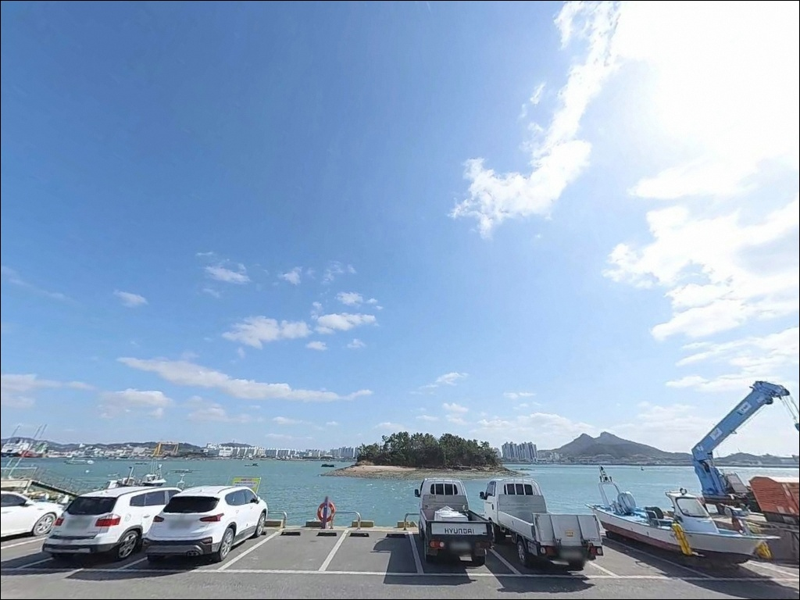
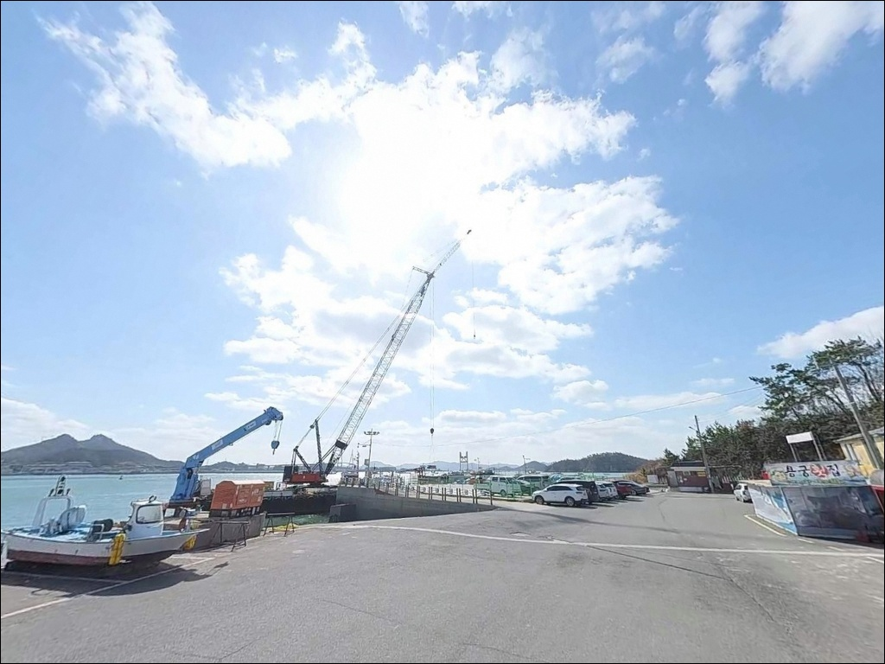
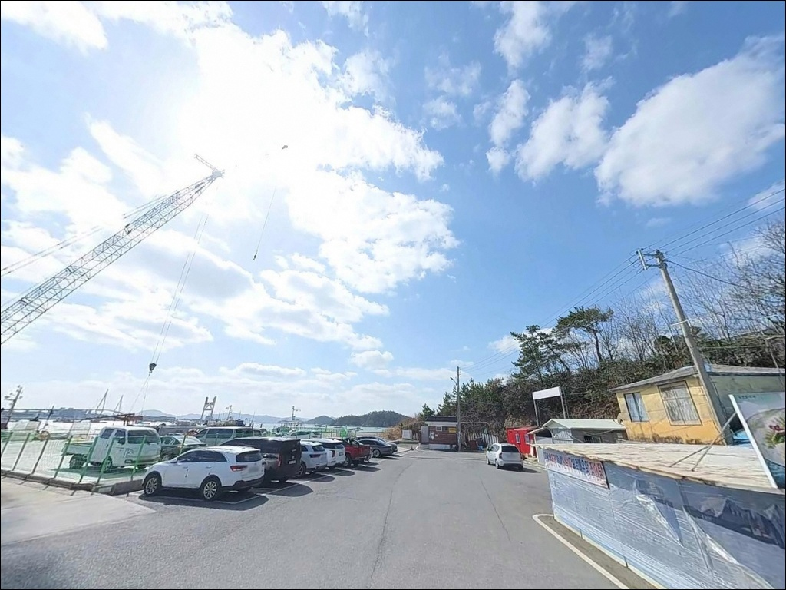
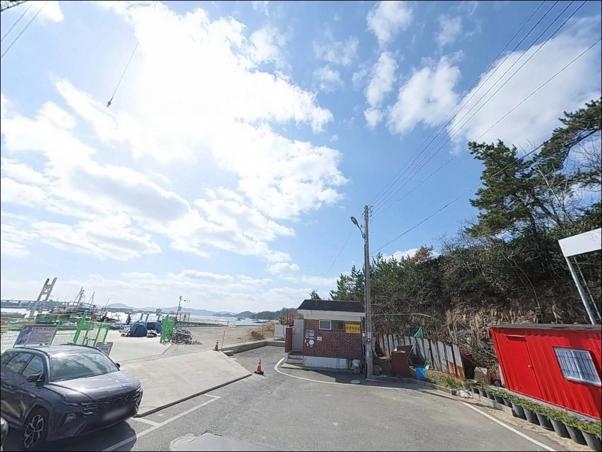
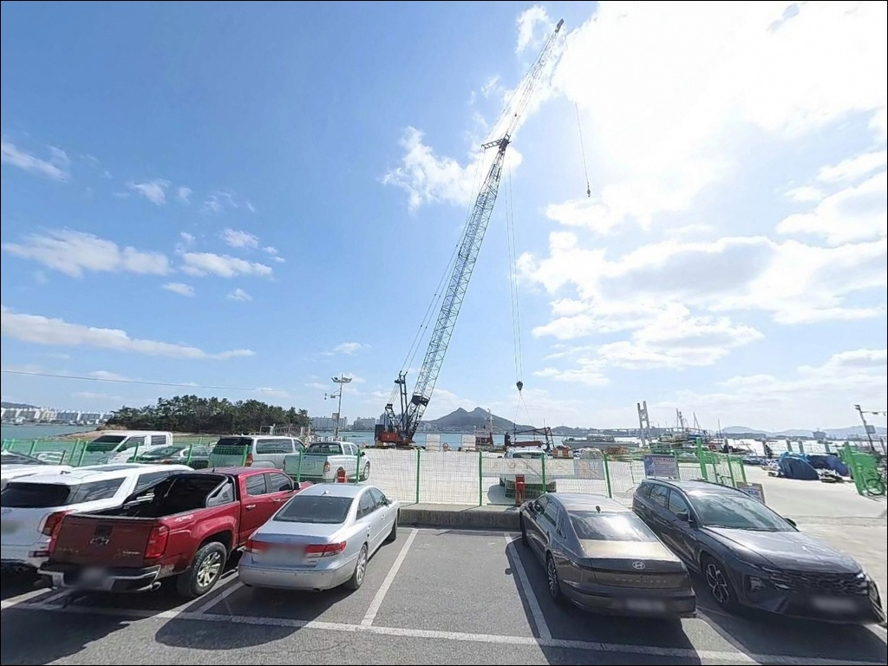
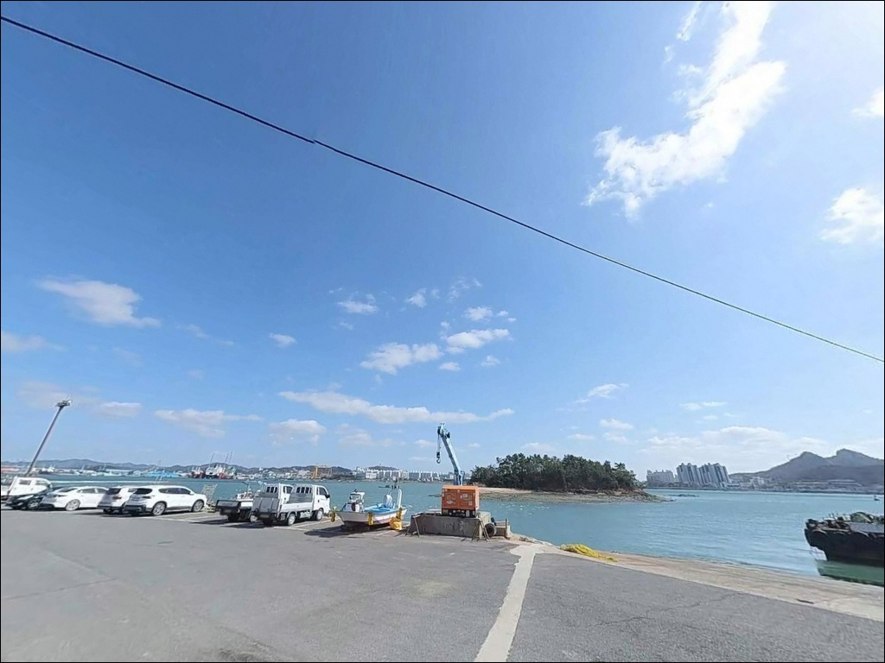
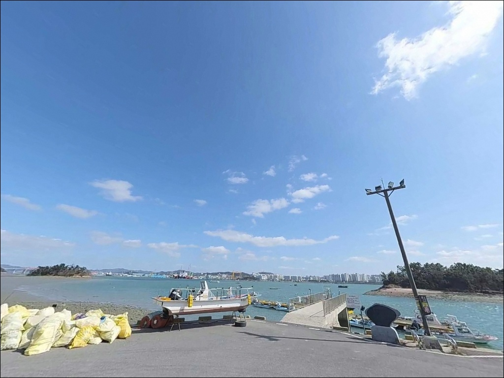

압해도선착장, 신장선착장, 전남 신안군 고요함이 매력인 차박, 낚시 감성 장소
이 페이지에는 광고(제휴 링크 포함)가 있으며, 광고 링크를 통해 구매하면 운영자가 판매 수익 또는 수수료를 받을 수 있습니다. 포인트 사진: 카카오맵 스카이뷰·로드뷰. 이 페이지의 지도·사진 이미지는 카카오맵의 실제 서비스 이미지와 다를 수 있습니다.


포인트 안내
압해도선착장
전남 신안군 압해읍 신장리 255-100
압해도선착장은 초들물~중날물 타이밍을 맞추지 않으면
수심 확보 자체가 되지 않는
펄 저질 포인트입니다.
간조 시 수심이 0~0.6m 수준으로 얕아지기 때문에,
물때 계산 없이 진입하면 채비를 던져도
바닥만 긁는 상황이 됩니다.
물때 판단 하나가 이 포인트의 조과를 처음부터 가릅니다.
이 글은 압해도선착장의 물때 판단 기준,
지형 조건, 낚시 스타일별 공략 방식,
차박 체류 환경에 집중합니다.
조황 단정이나 특정 어종 보장은
이 글의 범위에 포함되지 않습니다.

1. 진입 동선과 포인트 접근성
압해도선착장은 압해대교(2008년 개통)를 통해
목포에서 직접 차량 진입이 가능합니다.
목포 시내에서 약 10~15분 거리로,
서해안 낚시 포인트 중
접근성이 상위권에 해당하는 구조입니다.
선착장까지 포장도로가 연결되어 있어
일반 승용차는 물론 캠핑카도
진입에 무리가 없는 편입니다.
선착장 부지 자체가 넓어 회차 공간도
확보되는 구조이며, 주차는 선착장 공터를 이용합니다.
주차 요금 없이 상시 개방 운영됩니다.
다만 어선 입출항 동선을 방해하지 않는
자리 선정이 기본 매너입니다.
조업 선착장 특성상 이른 새벽에 어선 활동이 있는 구간이 있어
주차 위치를 정할 때 동선을 먼저 파악하는 것이 좋습니다.

2. 차박 환경과 야간 체류 여건
선착장 공터가 넓은 편이라
차박 차량을 세우기에 공간 부족 문제는 크지 않습니다.
민가 밀집도가 낮고 포구 특성상 한적한 분위기여서
야간 프라이버시는 상대적으로 양호한 구조입니다.
목포대교와 유달산 방향 야경이 보이는 위치여서
개방감 있는 분위기가 형성됩니다.
다만 목포 북항과 마주한 외항 방향으로 열려 있어
바람의 영향을 받기 쉬운 자리입니다.
바람이 강한 날에는 내항 쪽으로
차 방향을 바꿔 바람막이 역할을 활용하는 방식이 유효합니다.
출조 전 풍속·풍향 확인이 차박 자리 선정을
결정하는 조건이 됩니다.
선착장 인근에 화장실(남녀 구분)과 매점이 있어
기본 편의성은 갖춰져 있습니다.
야간 선착장 조명이 낚시 자리 전체를 밝혀주지는 않으므로
개인 헤드랜턴은 별도로 준비해야 합니다.


3. 주변 편의시설 및 인프라 현황
압해도선착장 자체에 화장실(남녀 구분),
매점, 식당이 갖춰져 있습니다.
주차 무료, 상시 개방 운영으로
기본 체류 여건은 서해안 소규모 선착장 중
편의성이 비교적 갖춰진 구조입니다.
선착장 주변에 낚시전문점도 인근에 위치해 있어
채비 소모품 보충이 가능한 환경입니다.
식수·간식 보급은 압해읍 방향에서
미리 해결하고 진입하는 편이 효율적이며,
대형 마트나 병원은 목포 시내권에서
이용할 수 있는 거리입니다.
반경 10km권에 목포 시내 대형 병원·약국이 있어
비상 상황 발생 시
거리 부담이 크지 않은 위치입니다.
이 점은 야간 체류 시 안전망 측면에서 유리한 조건입니다.

4. 물때 계산이 조과를 결정하는 이유
압해도선착장 방문 전에 반드시 확인해야 할 것은
물때입니다.
펄 저질 특성상 간조 시간대에는
수심이 0~0.6m 수준으로 내려가 낚시 자체가 어렵습니다.
바다타임에서 신안 압해읍 기준 물때를 확인하고
초들물~중날물 타이밍에 맞춰 입장하는 것이 기본입니다.
대조기(사리) 전후에는 이 일대 조류가
연간 평균 최강 기준으로 1.5~2.7노트 수준까지 올라갑니다.
원투 채비 봉돌이 버티지 못하고 흘러버리는 구간이 생기므로,
사리 전후 출조는 조류 세기를 먼저 판단하는 것이 순서입니다.
서해안 특성상 기상 변화가 빠르기 때문에
기상청 예보를 당일 아침 한 번 더 확인하는 것이 좋습니다.
겨울에는 기온이 급격히 떨어지는 날이 있어
방풍·방한 준비도 빠뜨리지 않는 편이 좋습니다.
선착장 발판 가장자리와 미끄러운 구간에서는
구명조끼 착용이 필수입니다.

5. 지형 기반 낚시 여건 분석
압해도선착장의 지형은 내항과 외항 구조가 공존하는 형태입니다.
내항 쪽은 잔잔한 수면이 유지되는 편이고,
외항 쪽은 압해대교 인근 수로를 통해
조류가 직접 닿는 구간입니다.
선착장 끝단과 수로 방향이 핵심 포인트로,
조류가 살아나는 들물 타이밍에 어종 활성도가 높아집니다.
저질은 펄이며, 바닥층을 노리는 낚시 방식에
유리한 조건을 갖추고 있습니다.
펄 지형에서는 붕장어·감성돔 계열이
바닥을 타는 조류와 함께 움직이는 패턴을 보입니다.
초들물~중날물 타이밍이 이 포인트에서
수심과 어종 활성도를 동시에 확보할 수 있는 구간입니다.
초들물~중날물 타이밍을 맞추지 않으면
압해도선착장의 낚시 여건은 성립하지 않습니다.
압해대교 인근 수로 특성상 사리 전후 조류가 강해지면
원투 채비도 버티기 어려운 구간이 생깁니다.
최신 조황은 출조 전 압해도 낚시 커뮤니티나
주변 낚시전문점에서 꼭 확인하시기 바랍니다.


6. 포인트에 어울리는 낚시 스타일
이 포인트에서 가장 기본이 되는 낚시는 원투낚시입니다.
펄 저질과 들물 조류를 조합해
붕장어를 노리는 방식이 이 지형 구조와 잘 맞습니다.
참갯지렁이·청갯지렁이 또는 오징어살 계열 미끼를 사용하고,
초들물~중날물 타이밍에 집중하는 것이 기본 전략입니다.
릴찌낚시도 이 포인트에서 시도해볼 만한 스타일입니다.
조류가 흐르는 외항 구간에서 크릴이나 깐새우를 미끼로
감성돔을 노리는 방식입니다.
조류 흐름이 살아 있는 초들물 타이밍에
선착장 끝단 외항 쪽을 집중 탐색하는 운용이 유효합니다.
루어낚시도 들물 타이밍에 병행할 수 있습니다.
압해도 일대는 복룡리 나룻가 해안이
농어·숭어의 이동 길목으로 알려진 구역입니다.
이 일대 해협 구간에서도 농어 루어 시도 여건이 있는 편으로,
미노우 플러그나 지그헤드 계열이
들물 조류가 흐르는 구간에서 유효합니다.
내항 잔잔한 구간에서는 민장대낚시로
볼락·노래미 등 소형 어종을 노려볼 수 있습니다.
소형 채비를 선착장 안쪽 구석에 드리우는 방식으로,
야간 입장 시 조명 아래 소형 어종 탐색에 어울립니다.

7. 대안 포인트와 플랜 B 동선
조류가 너무 강하거나 물때가 여의치 않을 때는
같은 압해도 내의 가란대교 앞 선착장이
첫 번째 대안입니다.
감성돔 낚시 후기가 있으며 화장실이 가까운 구조로,
같은 해안선 권역이라 이동 거리도 짧습니다.
구도선착장은 압해도 내
원투낚시 중심의 현지인 포인트입니다.
온라인 정보가 많지 않은 편이지만,
같은 해안선을 공유해 물때 적용 기준이 동일하고
조용히 낚시를 즐기려는 낚시인에게 맞는 여건입니다.
압해도를 벗어난다면 목포 북항이 대안입니다.
인프라가 완비된 대규모 낚시 포인트로
다양한 낚시 스타일을 운용하기 좋습니다.
압해도선착장과 목포 북항을 묶는 당일 출조 동선은
한쪽이 여의치 않을 때 빠르게 전환할 수 있는
현실적인 플랜 B가 됩니다.

물때를 맞춘 낚시인에게
압해도선착장은 다른 얼굴을 보여줍니다
원투낚시로 붕장어를 노리거나
릴찌낚시로 감성돔을 시도하려는 낚시인에게
압해도선착장의 지형 조건은 잘 맞는 구조입니다.
목포에서 10~15분 거리라는 접근성,
화장실·매점이 갖춰진 편의성,
넓은 공터가 만들어주는 주차 여건은
당일 출조 기점으로 활용하기 좋은 포인트입니다.
반면 물때 계산 없이 간조 시간대에 진입하거나,
사리 전후 강한 조류 상태에서 무리하게 채비를 운용하면
낚시 자체가 성립하지 않는 상황을 맞닥뜨릴 수 있습니다.
초들물 타이밍 확인, 조류 세기 판단, 어선 동선 배려,
이 세 가지를 갖추고 간다면
서해안 낚시 포인트로 기억에 남는 출조가 될 수 있는 곳입니다.
화장실·매점이 갖춰진 공터에서
조류 흐름을 들으며 하룻밤을 보내는 차박 여행자라면,
바람 방향만 미리 확인해두면
낚시와 차박을 편하게 엮어가기 좋은 포인트입니다.